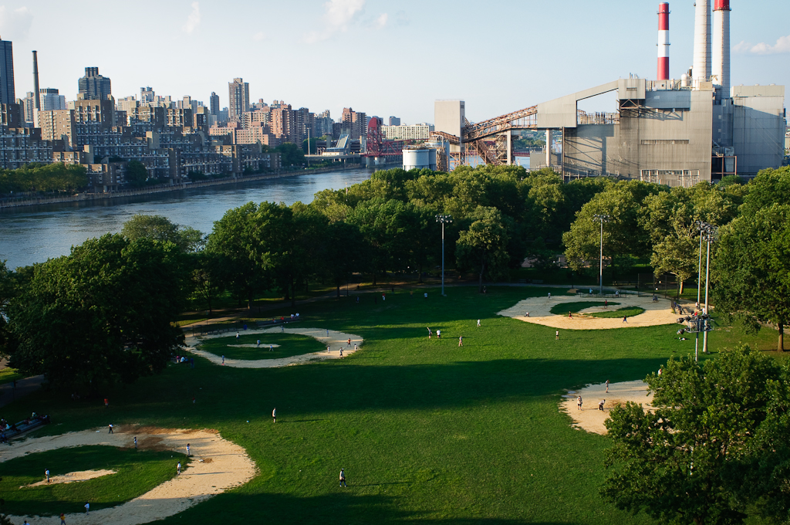

| access date |
description |
link |
media |
| oct 12 |
Jamaica Queens |
https://jamaica.nyc/ |
 |
| oct 12 |
Queens Information |
https://www.longisland.com/queens.html |
|
| oct 12 |
Forest Park |
https://www.nycgovparks.org/parks/Q015/ |
|
| oct 12 |
Queensbridge Park |
http://nycfooty.leagueapps.com/location/132043 |
 |
| oct 12 |
Bike Tour |
https://innocenceproject.org/td-five-boro-bike-tour-2/ |
|
| oct 12 |
QUEENS Botanical |
https://www.theknot.com/marketplace/queens-botanical-garden-flushing-ny-507967 |
|
| oct 12 |
Astoria Queens |
https://www.timeout.com/newyork/queens/astoria-queens-neighborhood-guide |
|
| oct 12 |
Flushing |
https://qns.com/2019/01/flushing-chamber-of-commerce-launches-made-in-flushing-program-to-support-local-entrepreneurs/ |
|
| oct 12 |
Flags |
https://www.nps.gov/orgs/1955/nps-foreign-language-fact-sheets.htm |
|
| oct 12 |
Hallets Cove Beach |
https://pixels.com/featured/hallets-cove-beach-cate-franklyn.html |
 |
| oct 12 |
Rockaways Beach |
https://www.nytimes.com/2020/07/31/realestate/a-rockaway-beach-queens-life.html |
|
| oct 12 |
Jones Beach |
https://www.iloveny.com/listing/jones-beach-state-park/2482/ |
 |